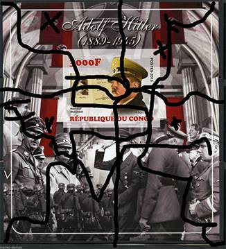
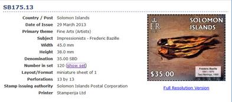

PWO - Entretien avec Mme Olfa Mokaddem
Cheffe de programme « Philatélie et CRI » Bureau international de l'UPU
Victor MANTA, PWO
Introduction
La PWO a posée quelques questions à la nouvelle Cheffe de programme « Philatélie et CRI » au Bureau International (BI) de l'Union Postale Universelle, qui a eu l'amabilité de nous répondre. Nous la remercions pour les réponses fournis et nous publions ci-dessous nos questions, ses aimables réponses, suivi de nos brefs commentaires.
Questions, réponses et commentaires
• PWO. Quand avez-vous commencé votre activité comme Cheffe de programme « Philatélie et CRI » au Bureau International de l'Union Postale Universelle ? Comment a été ce changement pour vous ?
Réponse BI:
- Ma prise de fonction comme Cheffe de programme « Philatélie et CRI » au Bureau international de l'UPU date du 02.07.2017.
- C'est une nouvelle responsabilité que j'ai prise avec honneur et plaisir à la fois, comme toutes les responsabilités que j'avais en Tunisie au sein de la Poste Tunisienne, ainsi qu'à l'UPAP, mais également avec beaucoup d'intérêt et de sérieux.
• PWO. Par le lien nous avons appris que pendant l'année 2017 l'UPU a émis un nombre de quatre Circulaires concernant les émissions illégales et que pendant les premiers trois mois du 2018 aucun nouvelle Circulaire n'a pas été publiée. Etes-vous d'avis que ce nombre de Circulaires couvre suffisamment bien les émissions illégales de cette période ?
Réponse BI:
- Ce nombre réduit de circulaires ne reflète pas la réalité, en effet les émissions illégales représentent un nombre assez important par rapport au nombre global des émissions, seulement les demandes des circulaires doivent émaner des opérateurs car se référant au principe de la souveraineté, seul les pays (et donc les administrations émettrices de timbres-poste dans ces pays) sont décideurs et souverains pour leurs timbres-poste. A cet effet, je rappelle ce que stipule l'article 6 de la convention (paragraphe 2.2 « le timbre-poste est un attribut de souveraineté »).
Cependant, le Bureau international, ainsi que tous les partenaires de l'AMDP, ont également un rôle à jouer dans ce domaine, celui de la veille sur le marché international, du suivi, de coordination, de formation notamment sur les bonnes pratiques philatéliques et de soutiens aux opérateurs désignés.
PWO. Donc Mme Mokaddem suit la ligne de ses prédécesseurs, selon lesquels les Circulaires ne sont pas dans la responsabilité directe du BI de l'UPU, mais par les pays eux-mêmes. Même si formellement c'est vrai, le fait qu'il y a moins de Circulaires dénonçant les illégaux est le résultat du fait que l'aide absolument nécessaire de la part du BI a diminué beaucoup dans la dernière décennie, ce qui a fait que de 10 - 15 Circulaires par année du passé on est arrivé a presque rien du tout.
• PWO. Sur cette page de l'UPU les Circulaires philatéliques couvrant la période 2003 - 2015 ne sont plus accessibles aux philatélistes et ceci depuis fort longtemps. Est-ce que cette situation déplorable va changer prochainement ?
Réponse BI:
- Le Bureau international via le programme « Philatélie et CRI » est conscient de cette situation, c'est pourquoi, une décision a été prise pour publier les circulaires sur le site de WNS qui est accessible au grand public. Je tiens à rappeler que toutes les circulaires émises depuis 2003 jusqu'à 2017 figurent sur le site web de l'UPU sont disponibles pour les opérateurs désignés, qui en reçoivent une copie écrite. Afin de pallier à ce manque que nous avons détecté depuis longtemps, nous avons récemment commencé la mise en ligne publique de ces circulaires sur le site WNS par ordre décroissant (2017-2016-2015) et nous continuerons au fur et à mesures. L'intégralité des circulaires émises depuis 2003 sera donc disponible au grand public très prochainement.
PWO. Le fait que les Circulaires publiées sur le site de l'UPU ont êtes rendu inaccessibles pour les collectionneurs a été une TRÉS mauvaise idée. Pour le moment seulement les années 2017 - 2015 sont couvertes sur le site de la WNS et l'avancement marche très lentement.
Le plus étonnant est le fait qu'AUCUNE Circulaire de l'année 2018 n'a pas été publiée jusqu'au septembre 2018, un fait qui n'est jamais arrivé !
• PWO. Le système WNS de numérotation de l'Association mondiale pour le développement de la philatélie (AMDP/WADP), entré en vigueur en 2002 et géré par l'UPU, aurait dû réduire le nombre des émissions illégales qui arrivent en permanence sur le marché philatélique. Est-ce que l'UPU a réussi dans cette démarche et le nombre de telles émissions a été efficacement réduit ?
Réponse BI :
- Le WNS est aujourd'hui le seul outil de référencement en ligne des timbres-poste émis et déclarés officiels par les opérateurs désignés participants. Chacun des timbres présents sur le site du WNS a un certificat d'authenticité dont un exemplaire reste au Bureau international de l'UPU, et un autre est envoyé à l'opérateur désigné concerné.
Les objectifs du WNS depuis sa mise en service en 2002, sont de donner aux philatélistes un catalogue de toutes les émissions officielles et de lutter ainsi contre les émissions illégales effectuées par des faussaires sans l'accord des opérateurs désignés concernées.
La question de « réduire le nombre des émissions illicites » n'incombe pas uniquement au WNS pour de nombreuses raisons :
• Le système WNS est l'un des outils de cette lutte,
• Le système WNS n'inclut pas tous les opérateurs désignés car il est fondé sur le volontariat,
• La lutte contre les émissions illicites nécessite un effort commun entre les différents intervenants du domaine : les opérateurs désignés (via les bonnes pratiques et l'adoption d'un cadre juridique interne adéquat), les négociants, les agents, la presse philatélique, la FIP via la commission de la lutte contre les illicites et les contrefaçons, ,
A cet effet, l'UPU et l'AMDP joueront également un rôle important à travers les séminaires, les colloques et les tables rondes dédiés à ce sujet.
Le BI de l'UPU travaille actuellement sur un plan d'action judicieux qui se résume en ce qui suit :
La communication :
• Revue du site web de l'UPU : rubrique « Philatélie » vers une plus-value destinée aux opérateurs désignés, (en cours)
• Mise à jour et publication de toutes les circulaires publiées depuis 2003 sur le site WNS, (en cours)
La formation :
- Réalisation de séance de formation à distance via Web-Ex,
- Planification des ateliers de formation ciblés par région,
- Revue du Cours de formation philatélique à distance destiné aux personnels des opérateurs désignés « Train-Post » (2019).
L'accompagnement :
- Présenter l'aide et le soutien aux opérateurs désignés dans leurs projets philatéliques (émission, exposition, e-philatélie, )
- Présenter l'assistance technique et l'expertise aux opérateurs désignés.
PWO. Un long commentaire, avec des mesures assignes aux autres, mais pas une réponse directe à notre question. La triste réalité est que la très couteuse WNS n'a pas réduit le nombre des timbres illégaux, ce que on voit sur les marchés philatéliques.
• PWO. Nous avons constaté que néanmoins il y a un nombre très important des nouvelles émissions illégales qui envahissent les marches. Est-ce que le moment n'est pas venu de collaborer avec l'INTERPOL, avec lequel l'UPU a signé un Mémorandum de Coopération en 1997 ? (à voir ici)
Réponse BI:
- Le Mémorandum de Coopération établi entre INTERPOL et UPU en 1997 a pour objet la lutte, entre autre, contre :
• Le trafic illicite de stupéfiants,
• Les envois piégés,
• La pornographie enfantine et les réseaux de pédophilie,
• Le blanchiment des fonds.
La coopération entre l'UPU et INTERPOL reste active. Par ailleurs, le programme « Philatélie et CRI » uvre actuellement avec le « Groupe de la sécurité postale » au CEP sur le thème des émissions illicites afin d'attirer l'attention sur l'importance mais aussi la gravité de ce phénomène introduit au sein du marché philatélique international.
PWO. De nouveau trop de choses que nous les savons ou qui ne nous concernent pas, mais aucune intention, montrée par l'UPU, d'utiliser ce moyen efficace de lutte contre le crime organisé qui ronge depuis longtemps la philatélie. Ici seulement un exemple d'un bloc feuillette qui aurait été issu par la République du Congo en 2015. Source.

• PWO. Certains pays, généralement pauvres, émettent par des agents privés sous contrats, d'une manière légale, des quantités énormes de timbres différents, qui sont connus sous les noms des émissions abusives. Il n'est pas rare que des petits pays émettent jusqu'au 500 timbres différents pendant la même année. La majorité de ces timbres n'est pas répertoriée par le WNS, mais ceci ne fait pas d'eux des timbres illégaux. Est-ce que l'UPU a l'intention de prendre des mesures efficaces pour limiter le nombre de ces timbres, qui sont fortement nuisibles pour la philatélie ?
Réponse BI:
- Les émissions abusives représentent également un obstacle quant au développement et à la promotion de la philatélie, quelques opérateurs désignés cèdent leurs rôles en tant qu'autorités émettrices à leurs agents, bien que cette relation est basée sur un contrat, certains agents « abusent » en émettant des timbres-poste ne respectant ni la règlementation en vigueur ni le code de déontologie.
L'UPU peut intervenir dans ces conditions afin de rappeler au pays la réglementation ainsi que les procédures. Il est de son rôle également de présenter les formations adéquates, l'accompagnement ainsi que le suivi aux opérateurs.
Pour l'enregistrement de ces timbres-poste abusifs sur le WNS, la procédure exige que tous les timbres envoyés par les membres pour enregistrement doivent être accompagnés de formulaires d'enregistrement dûment remplis, cela nous donne l'occasion non seulement de vérifier l'authenticité des timbres avant de les enregistrer mais aussi d'alerter l'opérateurs contre toute pratique abusive ou illégale dans l'émission. Or dans la pratique, les pays pratiquant ce genre de méthode n'envoient pas de formulaire d'enregistrement officiel, donc nous ne pouvons pas procéder à leur enregistrement.
De plus, comme évoqué plus haut, cette pratique contrevient à la recommandation C 13/2016 Code de déontologie philatélique à l'usage des Pays-membres de l'Union, et plus précisément ses paragraphes 4 et 4.2 qui stipulent notamment que « Les autorités postales émettrices prendront soin d'émettre des timbres-poste contribuant à satisfaire les exigences du marché. Elles s'assureront que le nombre de timbres émis chaque année est limité en fonction des capacités de leur marché. Si les politiques à cet égard n'ont pas encore été fixées, les autorités postales émettrices devraient répondre à la demande du marché avec prudence afin d'éviter toute offre excédentaire. Elles ne satureront pas le marché, car cela pousserait les philatélistes et les collectionneurs à délaisser leur passe-temps. » Le Bureau international ne peut donc pas promouvoir ce genre de pratique alors qu'il s'efforce de la combattre.
PWO. On voit ici de nouveau que l'UPU se montre impuissant à ce fléau. En plus, au cours de l'année 2013, un nombre de 239 timbres a été enregistré pour les Iles Solomon avec la WNS. Source.

• PWO. Est-ce que l'UPU peut aider les philatélistes à déterminer si certain timbres précises sont des illégaux, s'ils ne sont pas mentionnés dans les Circulaires ? Ou doivent-ils s'adresser pour prendre de telles informations ?
Réponse BI:
- L'UPU est une organisation internationale qui constitue le principal forum de coopération entre les acteurs du secteur postal et notamment les opérateurs désignés. Les principales relations que l'UPU gère sont des relations interinstitutionnelles.
Mais il est possible que nous recevions au sein du Programme « Philatélie et CRI » des demandes d'information émanant des philatélistes, de membres d'associations ou de clubs philatéliques. Nous procurons des réponses dans le cadre de nos pouvoirs, et selon les cas nous orientons vers d'autres partenaires de l'AMDP tels que la FIP, l'AIJP,
Pour les informations concernant les émissions illicites, nous nous référons aux circulaires émises par l'UPU, mais nous orientons également nos correspondants vers la FIP et notamment sa commission de la « lutte contre les illicites et les contrefaçons ».
PWO. L'expérience passée nous a montré que le membres du Programme Philatélie n'ont pas de connaissances qui dépassent les données des quelques Circulaires publies. A leur demander de informations reste presque inutile.
• PWO. Comment pourrait la PWO et généralement les philatélistes aider plus efficacement l'UPU dans sa lutte contre les émissions illégales et abusives ?
Réponse BI:
- Les philatélistes représentent le vecteur principal du domaine philatélique, leurs coopérations avec les autres partenaires et intervenants du domaine est importante.
La lutte contre les émissions illicites et abusives et toute autre sorte de fraude et atteinte aux timbres et au domaine de la philatélie constitue un vrai défi auquel sont confrontées toutes les parties intéressées dont le PWO, en effet, via les articles, la communication et le référentiel des circulaires il pourrait présenter une aide précieuse.
Je suis convaincue que la lutte contre les émissions illicites est un effort de groupe où tout le monde est concerné.
PWO. Personne ne doute de ça, mais les problèmes qui sont li é s aux timbres illégaux restent sans réponse et sans des réelles perspectives d'être résolues.
Merci beaucoup de votre collaboration avec la presse philatélique.
MISE À JOUR DÉCEMBRE 2018
J'ai essayé d'accéder aux circulaires sur le site WNS: http://www.wnsstamps.post/fr/circulars
J'ai reçu un message court mais très suggestif, qui décrit parfaitement la situation de cette fin d'année 2018 en ce qui concerne les circulaires IB de l'UPU sur les timbres illégaux:
Nous sommes désolés, une erreur s'est produite.
C'est pourquoi, encore une fois, je ne vois aucun espoir que l'UPU et sa nouvelle direction philatélique contribuent de manière substantielle à la lutte contre les illégaux.
About the author. Victor Manta is the founder and the current president of the PWO. He is mostly interested in thematic (topical) stamps and in the philately on the Internet. His philatelic sites were multiple awarded in web sites philatelic competitions. He is also a well-known philatelic journalist, who published numerous philatelic articles on the web and in printed magazines.
|
|